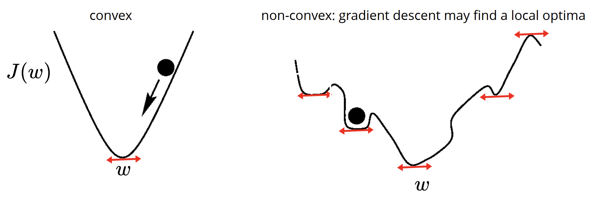
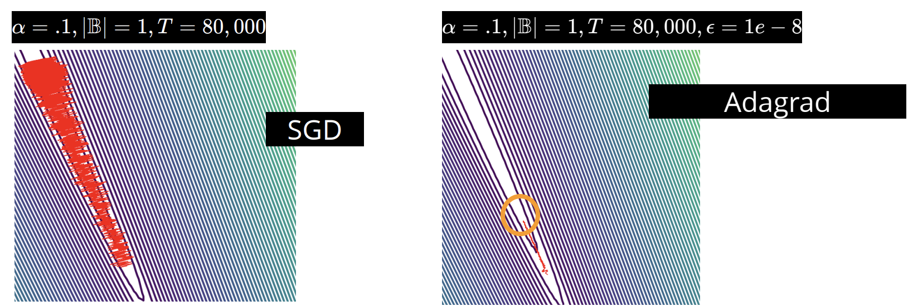

Gradient Descent
Let us first import some libraries:
import numpy as np
%matplotlib inline
import matplotlib.pyplot as plt
from IPython.core.debugger import set_trace
import warnings
warnings.filterwarnings('ignore')
As we have seen so far, a core problem in machine learning is parameter estimation, or model fitting, which requires solving some sort of optimization problem of the loss/cost function.
There are many optimization techniques, but our central problem is to consider the loss function $\ell\left(y^{(n)},f\left(x^{(n)};w\right)\right)$, which takes as inputs $y^{(n)}$, the ground truth ouptut data points, and $f\left(x^{(n)};w\right)$, the output of our model with certain parameters $w$. The goal is to find the appropriate model parameters $w$ that minimize the loss/funcion over all $N$ data points, i.e for:
$$J(w)=\frac 1N \sum_{n=1}^N \ell\left(y^{(n)},f\left(x^{(n)};w\right)\right)$$We want to find:
$$w^*=\arg\min_w J(w)$$And recall for our regression problems, we found that:
\begin{align*} & & \textbf{Linear Regression}\;\;\;\;\;\;\;\; & & \textbf{Logistic Regression}\;\;\;\;\;\;\;\;\;\;\; \\ \textbf{Model:} & & \hat{y}=f_w(x)=\mathbf{w}^{\top} \mathbf{x}\;:\;\mathbb{R}^D\rightarrow \mathbb{R} & & \hat{y}=f_w(x)=\sigma(\mathbf{w}^{\top}x)\;:\;\mathbb{R}^D\rightarrow \{0,1\} \\ \textbf{Cost Function:} & & J_w=\frac 1N \sum_n \frac 12 \left(y^{(n)}-\hat{y}^{(n)}\right)^2 & & J_w=\frac 1N \sum_n -y\log\left(\hat{y}^{(n)}\right)-\left(1-y^{(n)}\right)\log\left(1-\hat{y}^{(n)}\right) \end{align*}Recall for a multivariable function $J(w_0,w_1)$, we use partial differentiation when optimizing, i.e
$$\frac{\partial}{\partial w_1}J(w_0,w_1)\stackrel{\Delta}{=}\lim_{\epsilon\rightarrow 0}\frac{J(w_0,w_1+\epsilon)-J(w_0,w_1)}{\epsilon}$$And we can write down the gradient as the vector of all partial derivatives:
$$\nabla J(w)=\left[\frac{\partial}{\partial w_1}J(w),\cdots,\frac{\partial}{\partial w_D}J(w)\right]^{\top}$$The idea of gradient descent is an iterative algorithm for optimization that starts at some location $w^{\{0\}}$, and then "walk" or "descend" to a local minimum of the the function by incrementally updating our location by steps we take in the direction of the gradient vector, doing so until we converge at a critical point i.e:
$$w^{\{t+1\}}\leftarrow w^{\{t\}}-\alpha \nabla J\left(w^{\{t\}}\right)$$Where the curly braces denote what iteration our algorithm is on, and $\alpha$ is the learning rate that determines the step size at each iteration while moving toward a minimum of a loss function.
Below illustrates an example:
Where we iterate and update out parameters, each time inching closer to the minimum of the cost function. Concurrently, in the data space, a linear regression line, as the parameters update with each iteration, converges to the optimal fit.
Let us implement a generic version of gradient descent. The constructor of the gradient descent class takes
as input the learning_rate $\alpha$, max_iters, which is the limit on how many steps we
want to take before stopping, epsilon, which is a constant that we will use to compare to the norm of
our gradient. If the norm is smaller than epsilon, then we should stop as we have essentially converged.
Finally, record_history is a Boolean variable that if True, means we will be recording the
desired weights in the array w_history.
The function run takes as input gradient_fn, which will give the gradient of our
function with respect to the weights w. The inputs x and y are the data points
and labels respectively. We initialize our grad to infinity, and set an iteration counter t
and while the norm of the gradient is smaller than epsilon and t is less than max_iters,
we update out weigts w from the new gradient grad and save the weights.
class GradientDescent:
def __init__(self, learning_rate=.001, max_iters=1e4, epsilon=1e-8, record_history=False):
self.learning_rate = learning_rate
self.max_iters = max_iters
self.record_history = record_history
self.epsilon = epsilon
if record_history:
self.w_history = [] #to store the weight history for visualization
def run(self, gradient_fn, x, y, w):
grad = np.inf
t = 1
while np.linalg.norm(grad) > self.epsilon and t < self.max_iters:
grad = gradient_fn(x, y, w) # compute the gradient with present weight
self.w_history.append(w)
w = w - self.learning_rate * grad # weight update step
if self.record_history:
self.w_history.append(w)
t += 1
return w
Let's also then reimplement a LinearRegression class that we saw previously:
class LinearRegression:
def __init__(self, add_bias=True):
self.add_bias = add_bias
pass
def fit(self, x, y, optimizer):
if x.ndim == 1:
x = x[:, None]
if self.add_bias:
N = x.shape[0]
x = np.column_stack([x,np.ones(N)])
N,D = x.shape
def gradient(x, y, w): # define the gradient function
yh = x @ w
N, D = x.shape
grad = .5*np.dot(yh - y, x)/N
return grad
w0 = np.zeros(D) # initialize the weights to 0
self.w = optimizer.run(gradient, x, y, w0) # run the optimizer to get the optimal weights
return self
def predict(self, x):
if self.add_bias:
x = np.column_stack([x,np.ones(N)])
yh = x@self.w
return yh
And now we can plot the evolution of our best fit plots over time for each weight that we record in our weight history array:
N = 100
x = np.random.rand(N) * 10
y = -4*x + 10 + 2*np.random.randn(N)
optimizer = GradientDescent(learning_rate=.005, max_iters=100, record_history=True)
model = LinearRegression()
model.fit(x,y, optimizer)
plt.plot(x, y, '.')
for t,w in enumerate(optimizer.w_history):
plt.plot(x, x*w[0]+w[1], 'r-', alpha=t/len(optimizer.w_history), label=str(t))
plt.xlabel('x')
plt.ylabel(r'$y=xw_1 + w_0$')
plt.show()
This gradient descent method works best for convex functions. We define a convex subset of $\mathbb{R}^N$ such that if you select two points within the subset and connect them by a straight line, the line doesn't leave the subset.
A convex function is a function for which the epigraph is a convex set. The epigraph of a function is the region composed of all points bounded above the curve of the function. To put in another way, if we were to connect two random points of our function by a straight line, every point along this line should lie above the curve of our function, or in the epigraph.
The reason why convex functions are nicer for gradient descent methods is because they are easier to minimize. In particular, any critical point you find for a convex function is guaranteed to be the global minimum. For other non-convex functions, you may be just be stuck with a local minima.
How can we recognize convex functions? For starters, a constant function $f(x)=c$ is convex. Similarly, a linear function $f(x)=\mathbf{w}^{\top}\mathbf{x}$ is also convex. However, the fool-proof way to know if a function is convex is to simply take its second derivative, and if it is positive everywhere, the function is convex, i.e if $\frac{d^2f}{dx^2}\geq 0\;\;\forall\;x$ is satisfied.
Moreover, it is also true that the sum of any convex functions will also be convex. And example of this is the sum of squared errors that we have dealt with previously. In addition, the maximum of any convex functions will also be convex. For instance, $f(y)=\max_{x\in [0,2]}x^3y^4=8y^4$ will be convex.
Conversely, the composition of convex functions are generally not convex, however, if functions $f$ and $g$ are convex, and $g$ is non-decreasing, then $g(f(x))$ is convex. For example, $e^{f(x)}$ will be convex, for every convex function $f(x)$.
The reason why we should care is that we want out cost functions to be convex. For logistic regression, we can see below that our cost function is convex:
And we have seen in the past that the gradient for both the linear and logistic cost function is given as:
$$\nabla J(w) = \frac 1N \sum_n x^{(n)}\left(\hat{y}^{(n)}-y^{(n)}\right)=\frac 1N \mathbf{X}^{\top}\left(\mathbf{\hat{y}}-\mathbf{y}\right)$$Where $\mathbf{X}$ is a $D\times N$ matrix, and $\mathbf{\hat{y}}$ and $\mathbf{y}$ are $N\times 1$ vectors, hence the matrix multiplication takes $\mathcal{O}(ND)$ time, much better compared to the direct solution for linear regression, which ran in $\mathcal{O}(ND^2+D^3)$ time. So gradient descent seems to be much better for larger $D$. Recall that $\mathbf{\hat{y}}=\mathbf{w}^{\top}\mathbf{x}$ for linear regression, and $\mathbf{\hat{y}}=\sigma\left(\mathbf{w}^{\top}\mathbf{x}\right)$ for logistic regression.
It is also important to choose an appropriate value of the learning rate $\alpha$. If $\alpha$ is too small, it may take a long time to converge to the minimum, but if $\alpha$ is too large, it can overshoot or even diverge. $\alpha$ is selected in a grid search, usualy between $0.001$ to $0.1$, and we look at training curves to determine the best value.
Let's visualize the effect of learning rate on the behaviour of gradient descent in linear regression. Again, we use the plot-contour function to visualize the optimization landscape.
import itertools
def plot_contour(f, x1bound, x2bound, resolution, ax):
x1range = np.linspace(x1bound[0], x1bound[1], resolution)
x2range = np.linspace(x2bound[0], x2bound[1], resolution)
xg, yg = np.meshgrid(x1range, x2range)
zg = np.zeros_like(xg)
for i,j in itertools.product(range(resolution), range(resolution)):
zg[i,j] = f([xg[i,j], yg[i,j]])
ax.contour(xg, yg, zg, 100)
return ax
And now let's visualize the steps taken by the gradient descent (shown in red) for various selected values of the learning rate (starting at the origin), and let's plot its progress againt level curves of the cost function. Each graph has taken the same number of steps in their gradient descent.
cost = lambda w: .5*np.mean((w[0] + w[1]*x - y)**2)
learning_rates = [.001, .01, 0.05, 0.1, 0.12]
fig, axes = plt.subplots(ncols=len(learning_rates), nrows=1, constrained_layout=True, figsize=(20, 4))
c = []
for i, lr in enumerate(learning_rates):
optimizer = GradientDescent(learning_rate=lr, max_iters=50, record_history=True)
model = LinearRegression()
model.fit(x,y, optimizer)
plot_contour(cost, [-20,20], [-5,5], 50, axes[i])
w_hist = np.vstack(optimizer.w_history) # get the history for plotting
axes[i].plot(w_hist[:,1], w_hist[:,0], '.r', alpha=.8)
axes[i].plot(w_hist[:,1], w_hist[:,0], '-r', alpha=.3)
axes[i].set_xlabel(r'$w_0$')
axes[i].set_ylabel(r'$w_1$')
axes[i].set_title(f'learning rate = {lr}')
axes[i].set_xlim([-20,20])
axes[i].set_ylim([-5,5])
c.append([cost([w_hist[j,1],w_hist[j,0]]) for j in range(0,w_hist.shape[0])])
plt.show()
We notice that a learning rate of $0.001$, it looks like we are on our way there, however it clearly takes way too long to converge to the minimum. And we then observe for learning rates $0.01$ and $0.05$, the convergence becomes faster and faster. It's at a learning rate of $0.1$ where we start to overshoot, but still converging. At $0.12$, you actually diverge away from the minimum.
Finally, we can plot how the cost function decreases for various values of the learning rate:
fig = plt.figure()
for i, lr in enumerate(learning_rates):
plt.plot(c[i], marker= '.', alpha=.998, label =(f'learning rate = {lr}') )
plt.xlabel('iteration')
plt.ylabel('cost')
plt.title('training curves')
plt.legend()
plt.ylim([0,200])
plt.show()
The purple curve diverges, so that's not good. The blue one steadily converges, but is far too slow.
Stochastic Gradient Descent
We can write the cost function as an average over all instances or single data-points:
$$J(w)=\frac 1N \sum_{n=1}^N J_n(w)$$And the same is true for partial derivatives:
$$\frac{\partial}{\partial w_j}J(w)=\frac 1N \sum_{n=1}^N \frac{\partial}{\partial w_j}J_n(w)$$And therefore, we can think of the gradient of our cost function as the expectation or average value over our data $\mathcal{D}$ across all instances, i.e:
$$\nabla J(w) = \mathbb{E}_{\mathcal{D}}\left[\nabla J_n(w)\right]$$So the idea is that instead of full batch gradient updates, which uses the full gradient based on all data points and makes a determined move that minimizes the cost function further at each step, stochastic gradient uses the gradient for one instance or data point (selected randomly), and then proceed to "randomly walk" to the minimum of the cost function, with each step in expectation getting closer to the minimum.
An interesting side effect of stochastic gradient descent is that since you are computing the gradient based on a single instance, the gradient never becomes zero, so even at the minimum, the random walk continues. Shown below is an example of this with the Iris dataset, with $\mathcal{D}=2$ and $\alpha=0.1$.
And so, the way we can help with converge is to schedule the learning rate to decrease for each time step. This way, although the gradient never becomes zero, the learning rate $\alpha$ will tend to zero, and thus reach convergence.
A necessary requirement for this is that we want $\sum_{t=0}^{\infty} \alpha^{\{t\}}=\infty$, since you want to guarantee you can reach the optimal value within anywhere in the space, i.e for large $||w^{\{0\}}-w^*||$, you may not be able to reach the minimum. Moreover, also to guarantee convergence, we require that $\sum_{t=0}^{\infty}\left(\alpha^{\{t\}}\right)^2<\infty$. These two criteria in conjunction are known as Robbins Monro criteria.
Minibatch Stochastic Gradient Descent
In most situations, we neither take the full dataset to compute the gradient nor do we use only a single instance or data point to compute the gradient. We fall somewhere in-between, and take a batch of the dataset to produce our gradient estimates:
$$\nabla J_{\mathbb{B}}=\frac{1}{|\mathbb{B}|}\sum_{n\in \mathbb{B}}\nabla J_n(w)$$ $$\mathbb{B}\subseteq\{1,\dots,N\}\;\;\text{a subset of the dataset}$$A comparison between these three gradient estimates are shown below:
Momentum
One problem with gradient descent (even in the full batch case), is the steps will tend to oscillate a lot. This is because we always approach in the direction opposite of steepest gradient descent, and since the gradient is perpendicular to the contours of our function, unless the contours are perfectly circular, oscillations will occur. Stochastic gradient descent is even worse because of the noisy gradient estimate.
To help with this, we use momentum, in which we use a running average of gradients (i.e it will get updated after every ieration), and is written as:
\begin{align*} \Delta w^{\{t\}} & \leftarrow \beta \Delta w^{\{t-1\}}+(1-\beta)\nabla J_{\mathbb{B}}\left(w^{\{t-1\}}\right) \\ w^{\{t\}} & \leftarrow w^{\{t-1\}}-\alpha \Delta w^{\{t\}} \end{align*}Where $\alpha$ is our learning rate as before, and $\beta$ is a hyperparameter that controls how much momentum we have. We can re-write the above equation as follows:
$$\Delta w^{\{T\}}=\sum_{t=1}^T \beta^{T-t}(1-\beta)\nabla J_{\mathbb{B}}\left(w^{\{t\}}\right)$$So we can say that the momentum is an exponential average of all the gradients that we have observed. The most recent graident would carry the largest weight of $1-\beta$, the all other prior gradients carry weights that exponentially decrease with each step, or rather with weights $(1-\beta)^{T-1}.$
Below shows an example of how momentum reduces the oscillations as we progress:
Adaptive Techniques
Another tecnique we can use to make gradient descent more effective in practice is to use different learning rates for parameter $w_d$. This is because often in datasets, some features appear more sparsely than others, it would inefficient to continuously update the gradient for these features that don't need an update as often.
This is the main idea of Adagrad, or Adaptive Gradient Descent. For sparse features where we don't have as much data, we update their weights with a higher learning rate. Whereas, features with lots of data and lots of gradients will get update with a smaller learning rate. Formally, this is written as:
$$S_d^{\{t\}}\leftarrow S_d^{\{t-1\}}+\frac{\partial}{\partial w_d}J\left(w^{\{t-1\}}\right)^2$$Where $J\left(w\right)$ is our loss function, and $S_d^{\{t\}}$ is the sum of squared gradients that we have at iteration $t$. We then update the weights by scaling our learning rate by this sum of squared gradients:
$$w_d^{\{t\}}\leftarrow w_d^{\{t-1\}}-\frac{\alpha}{\sqrt{S_d^{\{t\}}+\epsilon}}\frac{\partial}{\partial w_d}J\left(w^{\{t-1\}}\right)$$Where $\epsilon$ is a numerical constant to avoid division by $0$ or other numerical issues.
One potential issue with adagrad is that the learning rate might approach zero too quickly. This will occur if our sum of squared gradients becomes too large, and thus our learning rate tends to zero premarturely. This is shown in the figure below:
And so, instead of using a sum, why not use a running average similar to momentum? This is exactly what RMSprop does. We introduce another hyperparameter $\gamma$, which takes weights both the current gradient we have, and the gradients we have seen so far, and exponentially distributes them the same we have done with momentum. Formally, it is written as:
\begin{align*} S^{\{t\}} & \leftarrow \gamma S^{\{t-1\}}+(1-\gamma) \nabla J\left(w^{\{t-1\}}\right)^2 \\ w^{\{t\}} & \leftarrow w^{\{t-1\}}-\frac{\alpha}{\sqrt{S_d^{\{t\}}+\epsilon}}\nabla J\left(w^{\{t-1\}}\right) \end{align*}Note that $S^{\{t\}}$ here is a vector and with the square root is element-wise.
And all of this brings us to Adam, or Adaptive Moment Estimation, which is the deault algorithm usually used for gradient descent. Adam is nothing new, it is simply a combination of: 1) use of momentum to smooth out the oscillations, and 2) adaptive per-parameter learning rate.
In particular, we first compute the momentum $M^{\{t\}}$ based on the moving average of the first moment of the gradient, and then computes $S^{\{t\}}$, the moving average of the second moment of the gradient, using the hyperparameters $\beta_1$ and $\beta_2$. In total, we have:
\begin{align*} M^{\{t\}} & \leftarrow \beta_1 M^{\{t-1\}}+(1-\beta_1)\nabla J\left(w^{\{t-1\}}\right) \\ S^{\{t\}} & \leftarrow \beta_2 S^{\{t-1\}}+(1-\beta_2)\nabla J\left(w^{\{t-1\}}\right)^2 \\ w^{\{t\}} & \leftarrow w^{\{t-1\}}-\frac{\alpha}{\sqrt{\hat{S}^{\{t\}}+\epsilon}}\hat{M}^{\{t\}} \end{align*}We write $\hat{M}^{\{t\}}$ and $\hat{S}^{\{t\}}$, because $M$ and $S$ are initialized to zero, so for early iterations, they are biased towards zero. In particular:
\begin{align*} \hat{M}^{\{t\}} \leftarrow \frac{M^{\{t\}}}{1-\beta_1^t} & & \hat{S}^{\{t\}}\leftarrow \frac{S^{\{t\}}}{1-\beta_2^t}\end{align*}As we can see, for many iterations $t$, the hyperameters raised to the power of a large $t$ will tend to zero, and thus $\hat{M}^{\{t\}}$ and $\hat{S}^{\{t\}}$ will tend towards $M^{\{t\}}$ and $S^{\{t\}}$ for many iterations. This will help us scale up faster and help us not be stuck with very small updates in the first few iterations.